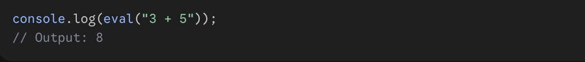
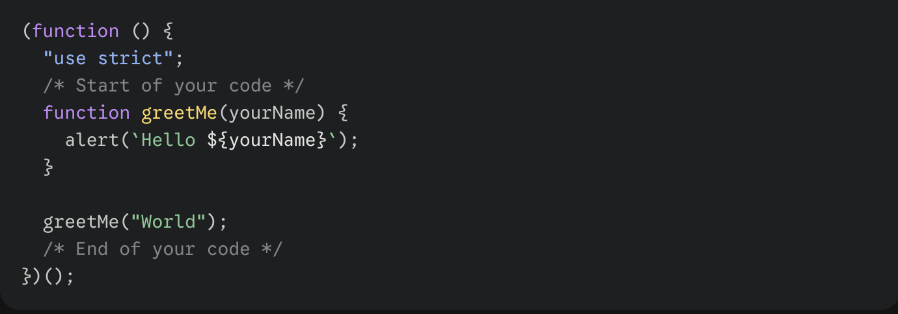
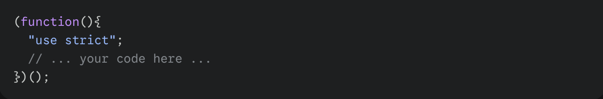

$ Introduction
JavaScript is a cross-platform, object-oriented scripting language used to make webpages interactive. It enables features such as animations, clickable buttons, popup menus, and dynamic content updates.
JavaScript can run in different environments:
• In the browser → it manipulates HTML and CSS via the Document Object Model (DOM)
• On the server (using Node.js) → it can handle databases, file systems, and real-time communication
JavaScript includes:
• A standard library (Array, Map, Math, etc.)
Core language features like variables, operators, loops, and functions
$ Getting Started
To begin coding in JavaScript, you only need a modern web browser (Firefox, Chrome, Edge, or Safari).
Using the Console The JavaScript Console (or Web Console) is a built-in tool that lets you execute JavaScript directly in your current page.
• Location: Usually appears at the bottom of the browser window.
• Functionality: It acts like an eval loop; the last expression entered is returned and printed to the output panel.
• Multi-line Input :
• If a line is incomplete (e.g., function foo() {), hitting Enter creates a line break. • Holding Shift + Enter forces a line break.
$ Syntax Overview
JavaScript is a free-form language that descends from smaller, dynamically typed scripting languages.
• Dynamic Typing: You do not need to declare variable types, method return types, or parameters.
• Prototype-based Objects: Unlike class-based systems, inheritance is dynamic. What is inherited can vary for individual objects.
• Functions: Functions are versatile; they can be properties of objects and execute as loosely typed methods without strict declarative requirements.
Code Examples
Here are the specific examples provided in the text for running code in the console.
1. Basic Math in Console The console evaluates expressions immediately.

2. "Hello World" Function This example demonstrates a function wrapped in an IIFE (Immediately Invoked Function Expression) using strict mode.

$ Best Exercises
When you are starting out or testing snippets in the console, the text recommends a specific wrapper pattern to ensure code safety and cleanliness.
The "Strict Mode" Wrapper Always wrap your code snippets in the following structure:

$ Resources
Comprehensive Video Course
Apna College: JavaScript Tutorial (2024) A complete "one-shot" tutorial covering JavaScript from zero to pro levels.
Format: Single 11-hour video lecture.
Included Course Projects Practical applications built directly within the tutorial to reinforce learning.
• Game: Stone Paper Scissors (Rock Paper Scissors).
• Application: Currency Converter App.
• Best For: Applying syntax to real-world logic and DOM manipulation.